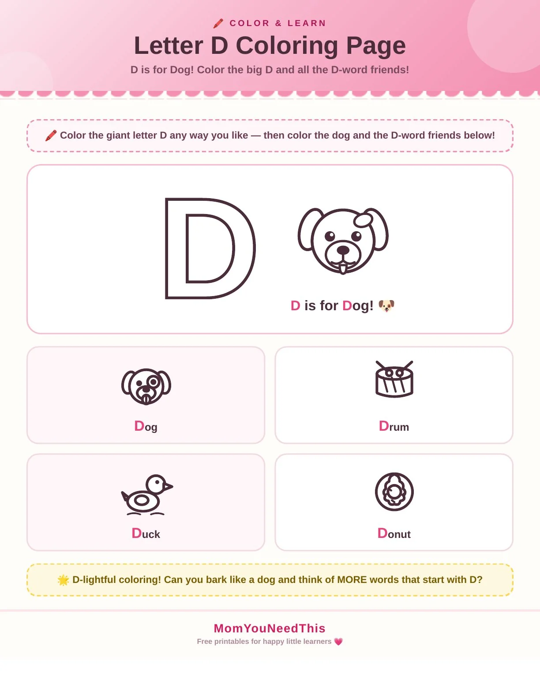

Free Letter D Coloring Page D is for Dog 🐶
A big, bold letter D just waiting to be colored! This simple printable pairs the letter with friendly pictures, perfect for little hands and big imaginations.
Quick Answer
This free printable pairs a big, bold letter D with pictures of things that begin with its sound — dog, duck and drum. Toddlers and preschoolers color the letter and the pictures while they practise hearing the tapping /d/ sound, building letter recognition and fine motor control. Large, simple outlines suit little hands. Download and print at home with no signup needed.
At a Glance
- Ages: Toddlers and preschoolers
- Activity: Coloring a big letter D with dog, duck and drum pictures
- Skills: Letter D recognition and coloring
- Format: Printable coloring page (PDF)
- Cost: Free, no signup
🐶 Dog
🦆 Duck
🥁 Drum

🖍️ Color The Letter D
Print the page, grab the crayons, and color the big letter D and its pictures. As each picture gets colored, say its name together and tap out the first sound: d-d-dog, d-d-duck, d-d-drum.
⬇️ Download Free Printable 🖨️ Print🎁 Free printable for toddlers & preschoolers
🎨 Talk About The Pictures
As your child colors, chat about the pictures. A dog, a duck and a drum all begin with the d sound — and so do door, doll and dinosaur. Ask which one your child would pick: bang a drum, cuddle a dog, or feed a duck?
🖼️ Display The Masterpiece
Hang the finished D where your child can see it — the fridge, a bedroom door, the side of a bookshelf. Displayed work builds pride, and a capital D on the wall keeps quietly teaching: straight line, big belly, every time your child walks past.
🎨 Keep Exploring Free Letter Activities
More alphabet learning activities are added regularly for toddlers and preschoolers.
🎁 View All Free Resources🔤 D Is For Dog — And More About The Letter D
D is for dog, duck and drum — the three pictures on this page — and the letter itself is worth a close look while the crayons are out. Capital D is a straight line with one big belly. Its small partner d changes shape completely — a little circle with a tall line — so coloring the capital is only half the pair; the other half is on the letter d tracing pages.
The d sound is a tap: the tongue flicks the ridge behind the top teeth — d. It is the noisy twin of t (same tap, with your voice humming). More d words to chat about over the crayons: door, doll, desk and dinosaur — and listen for d at the end of hand and bed, too.
When the page is done, the learning does not have to stop. Hunt for the letter d together in a storybook and tap its sound each time one turns up — it starts or ends words on almost every page.
🖨️ How to Use This Printable
Get started in minutes — everything here is free and made for busy parents.
- Download the printable. Tap the download button to save the free Free Letter D Coloring Pages file to your device.
- Print it out. Use any home printer and regular paper — cardstock works great for pages little hands will use again and again. The print button opens the full-size page in a new tab if you prefer to print from there.
- Learn together. Sit with your child and tap out the /d/ sound each time a new picture gets its color. Short sessions work best.
- Explore more. Check the free printables linked below for your next activity.
❓ Free Letter D Coloring Pages FAQs
Is this Free Letter D Coloring Pages printable free?
Yes — every printable on MomYouNeedThis is 100% free to download and print. No signup, no payment, just tap the download button and print the D page as often as your child wants to color it again.
How do I use this letter d printable?
Print the page and color it together: name the letter D, tap out its /d/ sound like the start of dog, and talk about each picture as it gets colored. Short, playful sessions work better than long lessons for little learners.
What literacy skills does this practice?
Letter recognition, beginning sounds, and fine motor control. Coloring the letter D itself teaches its shape — a straight line with one big belly — while the pictures anchor its /d/ sound to words your child already knows. These are the core pre-reading skills that prepare children for phonics and reading.
🔗 More Free Printables You’ll Love
Pair this printable with more free learning activities from the MomYouNeedThis library.
- 🎨 Free Letter E Coloring PageFree printable letter e coloring page for little learners.
- 🔊 Free Lowercase Letter D Sound PracticeFree printable lowercase letter d sound practice for little learners.
- ✏️ Free Letter D Formation PracticeFree printable letter d formation practice for little learners.
- 🖼️ Free Letter D Picture SortFree printable letter d picture sort for little learners.